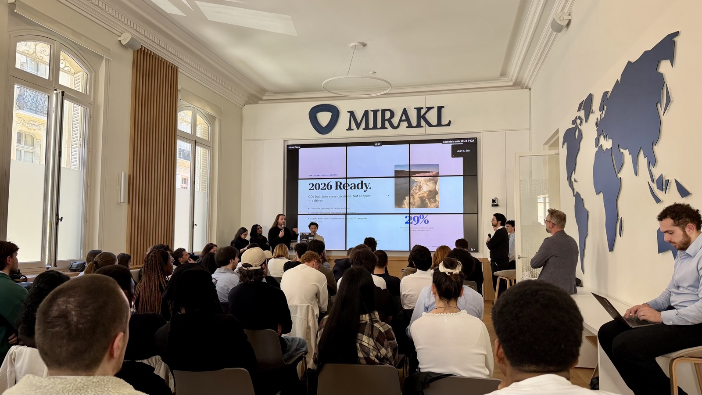
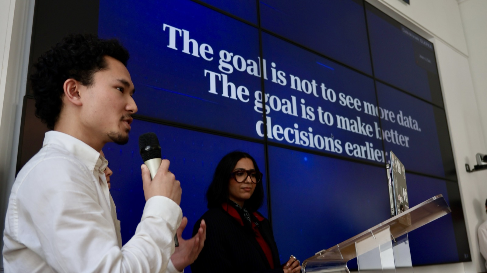
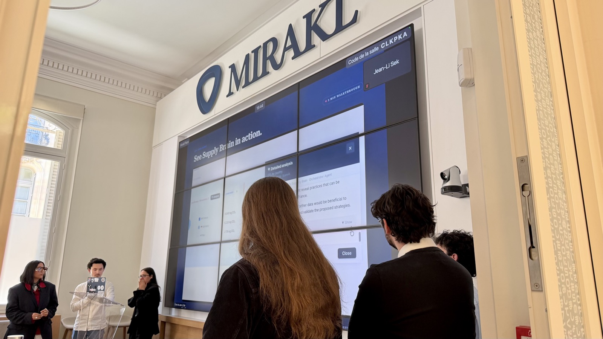
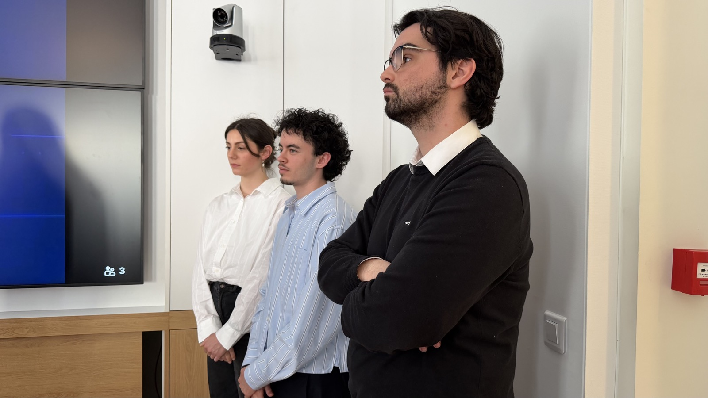
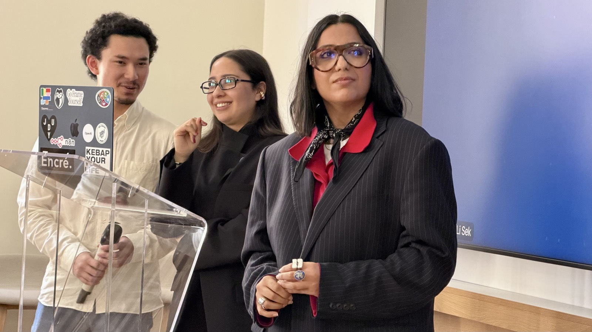
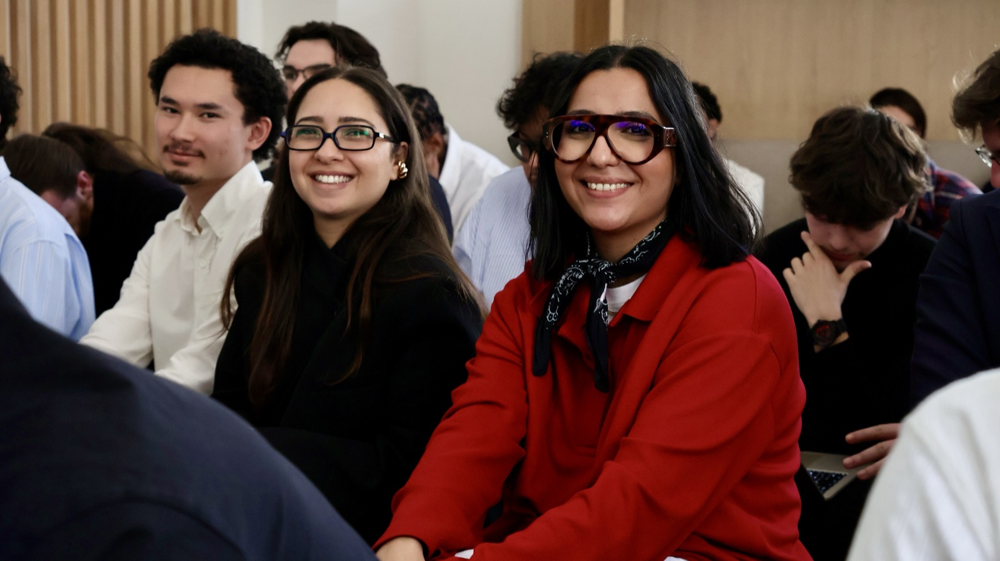
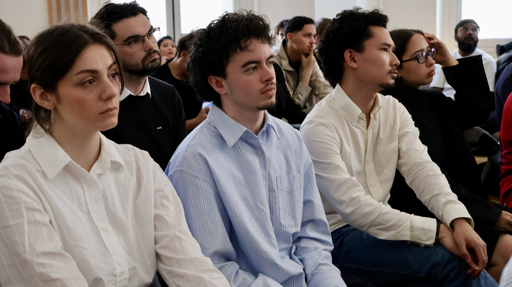

Proactive stock
200 SKUs across Amazon and Google Shopping (FR/IT/DE) on a shared stock. A supply barycentre recomputes the optimal allocation between channels, warehouses and margins — before a stockout becomes operational damage.
Supply chain dashboard built in 72 hours for the Mirakl Connect hackathon. The challenge: operate a cross-channel marketplace (Amazon + Google Shopping, FR/IT/DE) without stock-outs or overstock, with CSRD 2026 as a runtime constraint. Six orchestrated AI agents simulate cost, lead time and CO₂ in real time — the human keeps the final call.
Live demo
This video presents the user-facing experience and pitch.
Pitch deck
Executive pitch — Mirakl Connect Hackathon, 2026.
Product vision
The interface is built around intent: the goal is not to show every metric, but to surface what matters at the right moment.
200 SKUs across Amazon and Google Shopping (FR/IT/DE) on a shared stock. A supply barycentre recomputes the optimal allocation between channels, warehouses and margins — before a stockout becomes operational damage.
The dashboard reconfigures itself in real time based on what the user wants to see. Finance, ops, marketing and eco are starting points — any ad hoc view is generated on the fly. "Not a chatbot. A UI that listens."
Six Dust agents simulate cost × lead time × CO₂ simultaneously. Recommendations are surfaced; the final call stays with the operator, with all constraints visible.
Environmental compliance is a runtime constraint, not an afterthought report. The carbon footprint of each supply arbitration is computed in real time alongside cost and delay.
Decision workflow
A simple decision loop designed to move from marketplace signal to operator action.
Identify stock pressure and marketplace imbalance early.
Compare options across cost, lead time and CO2 impact.
Surface the most relevant action instead of another static chart.
Let the operator arbitrate with context, confidence and constraints visible.
Architecture
React 19, Supabase, Dust.tt and OpenAI orchestrated into a coherent decision pipeline.
Intent-driven interface. Finance, ops, marketing, eco + ad hoc views generated on the fly. Recharts, Leaflet, i18next (FR/EN).
Monitoring, Supply Allocation, Pricing, EcoFlow, Predictive, Orchestrator. Continuously simulate cost × lead time × CO₂ via SSE streaming.
Execution layer exposed to agents. Workflow automation, API proxy and cross-module orchestration.
21 tables · 12 real-time SQL views. Full event-driven schema. safe_query RPC (NL→SQL via GPT-4o) + get_oversells.
Hackathon
72 hours, one team, one pitch — Mirakl Connect, Paris.






